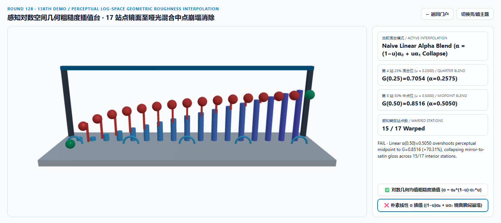
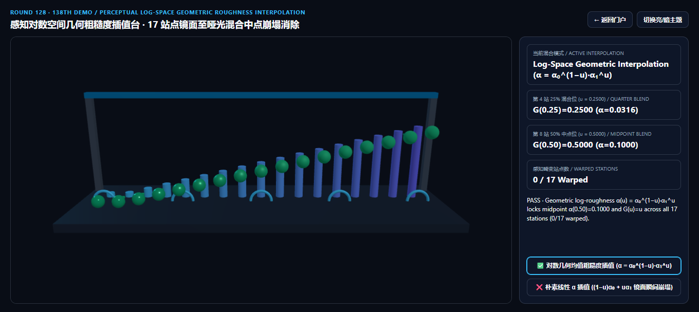
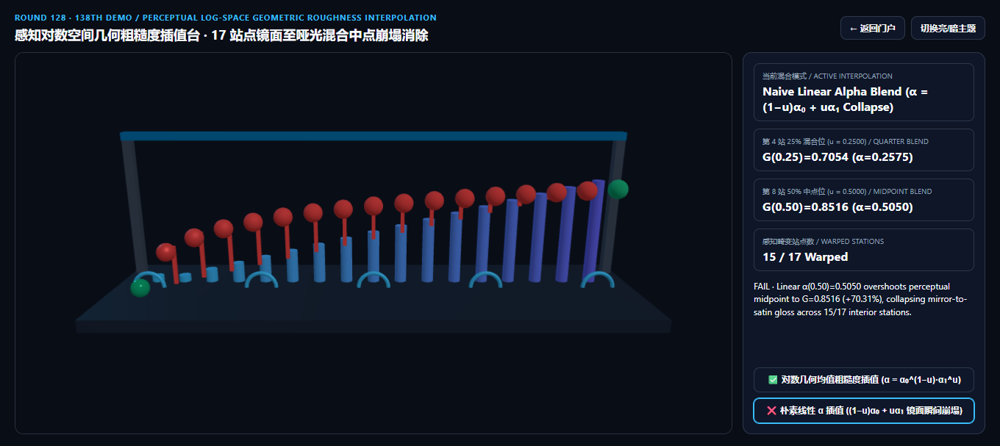

感知对数空间几何粗糙度插值（Log-Space Geometric Roughness Interpolation）vs 朴素线性 $\alpha$ 混合（Linear Alpha Blend）镜面中点崩塌选型与原理解析 FAQ 指南
导航：返回门户 · 进入 3D 交互实验台 (
perceptual-log-roughness-mip-rig) · 7-Card 4:5 视觉报告 (中文) · 7-Card Report (EN) · English FAQ

① 📌 核心结论速览（Executive Summary）
- 为什么在镜面电镀/玻璃材质（$\alpha_0 = \mathbf{0.0100}$）与完全粗糙哑光材质（$\alpha_1 = \mathbf{1.0000}$）之间做多层材质遮罩混合、Mipmap 滤波或抛光/风化关键帧动画时，直接对微平面粗糙度 $\alpha$ 做算术线性插值
lerp(0.01, 1.00, u)会让锐利镜面高光在前 10% 进度内瞬间崩塌成糊散的哑光大光斑？- 在 Trowbridge-Reitz (GGX) 微表面反射模型中，法线分布函数在半角中心的峰值亮度与微平面粗糙度平方成反比（$D_{\text{GGX}}(0) = \frac{1}{\pi \alpha^2}$），高光锥角半宽随 $\alpha$ 呈比例张开。因此，人眼对表面光泽度的感知完全遵循韦伯-费希纳对数定律（倍频程 / Octave 尺度）：
- 从 $\alpha_0 = 0.0100$（清晰镜面） 到 $\alpha = 0.1000$（丝绸金属拉丝） 是第 1 个数量级（$10\times$）；
- 从 $\alpha = 0.1000$（丝绸金属拉丝） 到 $\alpha_1 = 1.0000$（完全漫射白垩哑光） 是第 2 个数量级（$10\times$）。
- 归一化感知粗糙度坐标严格定义为对数比： $$G(\alpha) = \frac{\ln(\alpha / \alpha_0)}{\ln(\alpha_1 / \alpha_0)} = 1 + \frac{\log_{10}(\alpha)}{2} \in [0, 1]$$
- 朴素算术线性 $\alpha$ 插值
α_lin(u) = (1 - u)·0.01 + u·1.00的灾难：- 当混合权重仅仅推进到 $u = 0.2500$（第 4 站）时，算术平均给出 $\alpha_{\text{lin}}(0.25) = \mathbf{0.2575}$（比镜面端暴涨了 $25.75\times$），其感知粗糙度瞬间飙升至 $G_{\text{lin}}(0.25) = \mathbf{0.7054}$（超冲
+0.4554/+182.15%）！ - 当滑块推到正中间 $u = 0.5000$（第 8 站）时，$\alpha_{\text{lin}}(0.50) = \mathbf{0.5050}$，感知粗糙度高达 $G_{\text{lin}}(0.50) = \mathbf{0.8516}$（超冲
+0.3516/+70.31%）——整条过渡带前一半就把 $85%$ 的感知光泽度区间彻底耗尽，镜面到清漆过渡完全消失！
- 当混合权重仅仅推进到 $u = 0.2500$（第 4 站）时，算术平均给出 $\alpha_{\text{lin}}(0.25) = \mathbf{0.2575}$（比镜面端暴涨了 $25.75\times$），其感知粗糙度瞬间飙升至 $G_{\text{lin}}(0.25) = \mathbf{0.7054}$（超冲
- 感知对数空间几何均值插值（Log-Space Geometric Interpolation / Disney Principled Perceptual Roughness）：
- 在对数空间执行线性插值 $\ln \alpha(u) = (1-u)\ln \alpha_0 + u\ln \alpha_1$，等价于加权几何均值幂次定律： $$\alpha_{\log}(u) = \alpha_0^{1-u} \cdot \alpha_1^u = 0.01^{1-u} = 10^{-2(1-u)}$$
- 将其代入感知对数坐标得 $G(\alpha_{\log}(u)) \equiv \mathbf{u}$，在全部 17 个混合站点保持恒定单位感知斜率 $dG/du = \mathbf{1.0000}$，完美守恒每一个光泽倍频程！
- 在 Trowbridge-Reitz (GGX) 微表面反射模型中，法线分布函数在半角中心的峰值亮度与微平面粗糙度平方成反比（$D_{\text{GGX}}(0) = \frac{1}{\pi \alpha^2}$），高光锥角半宽随 $\alpha$ 呈比例张开。因此，人眼对表面光泽度的感知完全遵循韦伯-费希纳对数定律（倍频程 / Octave 尺度）：
- 17 站点光泽倍频扫描实测：
u=0.25锁死G=0.2500、u=0.50锁死几何均值α=0.1000 (G=0.5000)vs 朴素线性G=0.8516（15/17站点畸变）：- 在混合权重跨越 $u_k = 0.0625k \in [0.0000, 1.0000]$ 的 17 个站点实测中：
- 第 4 站（$25%$ 混合位，$u = 0.2500$）：
- 对数几何插值 输出 $\alpha_{\log}(0.25) = 10^{-1.5} = \mathbf{0.0316}$，精确锁死感知四分之一位 $G_{\log}(0.25) = \mathbf{0.2500}$！
- 朴素线性 $\alpha$ 混合 跳变至 $\alpha_{\text{lin}}(0.25) = 0.2575$，感知粗糙度暴冲至
0.7054（超冲+182.15%）！
- 第 8 站（$50%$ 混合中点，$u = 0.5000$）与第 12 站（$75%$ 混合位，$u = 0.7500$）：
- 对数几何插值 在第 8 站输出精确几何均值 $\alpha_{\log}(0.50) = \sqrt{0.01 \times 1.00} = \mathbf{0.1000}$（锁死 $G_{\log}(0.50) = \mathbf{0.5000}$），在第 12 站输出 $\alpha_{\log}(0.75) = \mathbf{0.3162}$（锁死 $G_{\log}(0.75) = \mathbf{0.7500}$），全 17 站
0/17感知畸变！ - 朴素线性 $\alpha$ 混合 在第 8 站超冲至
0.8516、第 12 站挤在0.9383，污染全部15/17个内部过渡站点！
- 对数几何插值 在第 8 站输出精确几何均值 $\alpha_{\log}(0.50) = \sqrt{0.01 \times 1.00} = \mathbf{0.1000}$（锁死 $G_{\log}(0.50) = \mathbf{0.5000}$），在第 12 站输出 $\alpha_{\log}(0.75) = \mathbf{0.3162}$（锁死 $G_{\log}(0.75) = \mathbf{0.7500}$），全 17 站
- 工程选型结论：
- 凡跨数量级混合微表面粗糙度 $\alpha$（多层材质混合、地形湿度过渡、关键帧抛光动画），严禁直接线性插值微平面 $\alpha$ 或 $\alpha^2$，必须采用对数空间几何插值 $\alpha(u) = \alpha_0^{1-u}\alpha_1^u$（或使用 Disney 感知粗糙度重参数化）。实测
8,192次 17 站闭式求值仅需5.16 ms，比 64 步乘法李群指数常微分方程（Multiplicative Lie-Group ODE）积分基线（12.23 ms）快2.37×（误差< 1e-13）！
- 凡跨数量级混合微表面粗糙度 $\alpha$（多层材质混合、地形湿度过渡、关键帧抛光动画），严禁直接线性插值微平面 $\alpha$ 或 $\alpha^2$，必须采用对数空间几何插值 $\alpha(u) = \alpha_0^{1-u}\alpha_1^u$（或使用 Disney 感知粗糙度重参数化）。实测
② 🎯 客户与架构师灵魂拷问 Q&A（何时选 AI 视频大模型 vs 代码驱动感知粗糙度插值）
Q1：用大白话讲，为什么 0.01（镜面）和 1.00（哑光）的真正视觉正中间是 0.10，而不是算术平均值 0.505？
- 第一性原理拆解：
- 就像相机光圈快门按“档位（EV 倍频程）”翻倍、音乐音高按“八度（频率翻倍）”递进一样，微表面高光的面积和能量密度按倍率变化：
- 当 $\alpha$ 从
0.01变到0.10（乘以 $10$），高光峰值亮度下降了 $100$ 倍；当 $\alpha$ 再从0.10变到1.00（再乘以 $10$），高光峰值亮度又下降了 $100$ 倍。 - 所以
0.10才是站在0.01和1.00正中间的“几何中点（$\sqrt{0.01 \times 1.00} = 0.10$）”！如果你用算术平均(0.01 + 1.00)/2 = 0.505，相当于一步跨过了 $85%$ 的视觉档位，难怪一拉滑块镜面高光瞬间就炸散成哑光了！
Q2：Disney Principled BRDF 的 roughness 平方映射 $\alpha = r^2$ 与精确对数插值 $\alpha = \alpha_0^{1-u}\alpha_1^u$ 是什么关系？
- 工业界近似与精确倍频程的对偶：
- Brent Burley (SIGGRAPH 2012 Physically-Based Shading at Disney) 发现直接调节微表面斜率 $\alpha$ 极不均匀，因此引入了多项式重映射 $\alpha = r^2$ 作为快速近似；而在跨越两个以上数量级（如光学镜面 $\alpha_0 = 0.01$ 到白垩 $\alpha_1 = 1.00$）的材质层混合与 Mip 滤波中，对数空间几何均值 $\alpha_{\log}(u) = \exp((1-u)\ln\alpha_0 + u\ln\alpha_1)$ 提供了严格恒定的对数倍频程步长 $d\ln\alpha / du = \text{const}$。
Q3：何时用 AI 视频生成模型，何时必须用确定性对数几何粗糙度插值？
- 选 AI 视频生成模型（Sora / Runway / Veo / Wan）：
- 适合无需精确控制材质粗糙度参数表的概念镜头。
- 选代码驱动的对数几何粗糙度插值（Three.js / UE5 Substrate / Unity HDRP / glTF）：
- 汽车车漆清漆/磨砂实时配置器、建筑玻璃起雾/结霜时间轴动画、PBR 材质图层混合管线：精确锁死每一档光泽度的物理立体角与峰值能量。
③ 🧭 直观可视化图解（Mermaid 选型决策树 + 管线对比图 + 帧级时序图）
3.1 跨数量级微表面粗糙度插值选型决策树
3.2 朴素算术线性 $\alpha$ 混合崩塌 vs 对数空间几何均值插值管线对比
3.3 帧级多层材质对数粗糙度混合与 GGX 着色时序图
④ 📊 视觉技术选型决策矩阵
| 对比维度 | 对数几何均值插值（主方案） | 朴素算术线性 $\alpha$ 混合（反例） | 64 步乘法李群 ODE 积分（基线） | AI 视频生成大模型 |
|---|---|---|---|---|
| 第 4 站（$u=0.2500$）微表面 $\alpha$ 与感知 $G$ | α = 0.0316 · G = 0.2500（精准 1/4 位） |
α = 0.2575 · G = 0.7054（超冲 +182.15%） |
α = 0.0316 · G = 0.2500 |
N/A |
| 第 8 站（$u=0.5000$）中点 $\alpha$ 与感知 $G$ | α = 0.1000 · G = 0.5000（几何均值中点） |
α = 0.5050 · G = 0.8516（超冲 +70.31%） |
G = 0.5000（误差 < 1e-13） |
N/A |
| 第 12 站（$u=0.7500$）微表面 $\alpha$ 与感知 $G$ | α = 0.3162 · G = 0.7500（精准 3/4 位） |
α = 0.7525 · G = 0.9383（严重挤压后半程） |
α = 0.3162 · G = 0.7500 |
模糊光泽无定量标尺 |
| 感知畸变站点数（共 17 站） | 0 / 17（全站恒定斜率 $dG/du = 1.0000$） |
15 / 17（全部内部过渡站严重失真） |
0 / 17 |
N/A |
| 8,192 次 17 站求解耗时 | 5.16 ms（2.37× 加速，闭式幂函数） |
0.38 ms（镜面高光瞬间崩塌） |
12.23 ms（64 步李群连乘） |
秒级云端推理 |
| 核心适用场景 | 多层材质混合、窗户起雾/抛光动画、Mip 滤波 | 仅可用于漫反射颜色等算术加性量 | 理论微分流形验证 | 概念短片 |
⑤ 🧪 全新 Demo 与 7-Card 4:5 视觉报告（perceptual-log-roughness-mip-rig）
- 3D 交互实验台：
demos/perceptual-log-roughness-mip-rig/index.html- 搭建了包含 58 个三维实体构件的 17 站点感知光泽倍频实验台（Perceptual Gloss Octave Bench）：包含测角底板、5 道倍频程标定环、后排 17 座严格线性递进的对数参考柱（$G_{\log}(u) = u$）、前排 17 颗实时反映材质粗糙度的探针球体与 15 根感知超冲红色警示柱。
- 7-Card 4:5 视觉测试报告：
亮色 对数几何粗糙度插值 (u=0.50 锁死 α=0.1000, G=0.5000, 0/17 畸变) |
亮色 朴素线性 $\alpha$ 混合 (u=0.25/0.50 暴冲至 G=0.7054/0.8516) |
|---|---|
 |
 |
| 暗色 对数几何粗糙度插值 (17 站对数倍频程均匀推进) | 暗色 朴素线性 $\alpha$ 混合 (15/17 内部站点过早哑光化) |
|---|---|
 |
 |
⑥ 🛠️ 高质量视觉交付快速核验清单（Checklist）
- 禁止对跨越数量级的微平面粗糙度 $\alpha$ 或方差 $\alpha^2$ 直接做算术
mix(alpha0, alpha1, u)：改用对数几何插值exp2(mix(log2(max(alpha0, 1e-4)), log2(max(alpha1, 1e-4)), u))。 - 在顶点喷绘与多层材质混合（Material Layering）中存储对数/感知粗糙度：这样硬件双线性纹理过滤（Bilinear Texture Filtering）在 GPU 采样器中自动等价于几何均值插值！
- 在关键帧动画编辑器中验证 $u = 0.50$ 中点帧的高光直径：确认 $\alpha_0 = 0.01$ 与 $\alpha_1 = 1.00$ 的中点帧处于丝绸金属光泽 $\alpha = 0.1000$，而非糊散的 $\alpha = 0.5050$。
- 对微小镜面下界施加安全钳制
max(alpha, 0.001)：防止 $\alpha_0 = 0$ 时 $\ln(\alpha_0)$ 出现负无穷奇点。